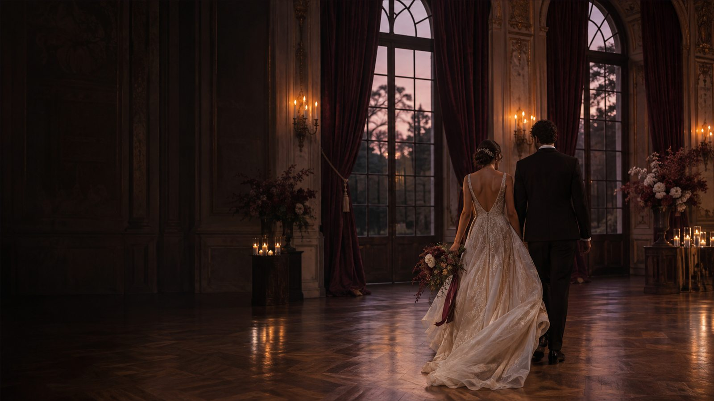
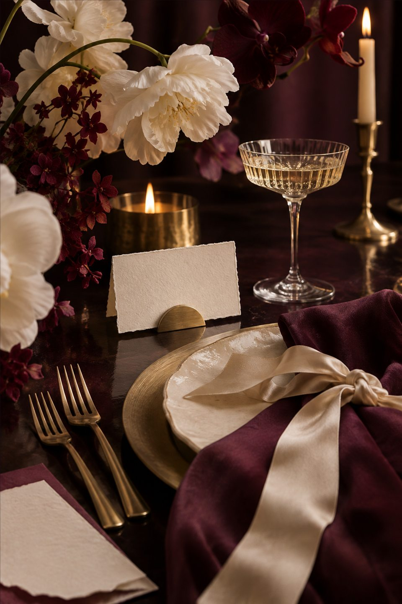

Személyes figyelem
Valóban megismerjük, mi fontos nektek.
Ketten Stúdió Esküvőszervezés
Az első ötlettől az utolsó programpontig átláthatóvá tesszük a szervezést, hogy a készülődésből is szép közös emlék legyen.

Egyetlen nap.
Megannyi jól időzített részlet.
Rólunk
A Ketten Stúdió személyes szemléletű esküvőszervező műhely.
A vágyaitokat konkrét tervvé alakítjuk, összefogjuk a szolgáltatókat, és végig kézben tartjuk a részleteket. Nem kész sablonokban gondolkodunk: minden döntést a történetetekhez, a vendégeitekhez és a lehetőségeitekhez igazítunk.
Így dolgozunk együttValóban megismerjük, mi fontos nektek.
Minden feladat és döntés követhető marad.
A tervezés alatt és a nagy napon is mellettetek vagyunk.
Szolgáltatásaink
Ott kapcsolódunk be, ahol a legnagyobb szükségetek van ránk — egy induló konzultációtól a teljes helyszíni koordinációig.
Közösen pontosítjuk a dátumot, a vendéglétszámot, a hangulatot és a rendelkezésre álló keretet. Ebből születik meg a szervezés első, reális terve.
↗Felkutatjuk és rendszerezzük a megfelelő helyszínek, fotósok, videósok, dekoratőrök, zenészek és vendéglátók ajánlatait.
↗Felépítjük a nap ritmusát a készülődéstől az esti programokig, és összehangoljuk az érkezéseket, átállásokat, fontos pillanatokat.
↗Az esküvő napján mi tartjuk a kapcsolatot a szolgáltatókkal, követjük az ütemtervet és kezeljük a felmerülő szervezési helyzeteket.
↗A közös munka
Az átlátható folyamat leveszi a vállatokról a bizonytalanságot, miközben minden fontos döntés a kezetekben marad.
Összegyűjtjük az elképzeléseiteket és meghatározzuk a fő kereteket.
Kiválasztjuk a helyszínt és a hozzátok illő szolgáltatókat.
Kialakítjuk a programot, a látványvilágot és a teljes feladatlistát.
Minden visszaigazolást, felelőst és időpontot még egyszer ellenőrzünk.
A háttérből ügyelünk rá, hogy minden a terv szerint haladjon.

Arculat · részletek · hangulat
Kreatív koncepció
A dekoráció nem különálló elemek gyűjteménye, hanem az ünnep közös hangulata. Segítünk egységes rendszerbe rendezni a színeket, formákat és személyes részleteket.
Csomagok és árak
Három lépték, ugyanazzal a figyelemmel. Válasszátok azt a csomagot, amely a legjobban illeszkedik ahhoz, ahol most tartotok.
01 · Biztos alapok
189 000 Ft
Azoknak, akik maguk szerveznek, de biztos alapokra és szakmai iránymutatásra vágynak.
Legnépszerűbb
02 · Végigkísért tervezés
389 000 Ft
A tervezés fontos pontjain végig mellettetek vagyunk, a nagy napon pedig átvesszük a koordinációt.
03 · Teljes körű jelenlét
689 000 Ft
Komplex támogatás az első döntéstől az ünneplés utolsó pillanatáig.
Ártájékoztató: A feltüntetett összegek bruttó mintaárak. A helyszín, vendéglátás, fotózás, zene, dekorációkivitelezés és más külső szolgáltatások díját nem tartalmazzák.
Kiegészítő szolgáltatások
A kész forgatókönyv átvétele és az esküvő helyszíni összefogása.
149 000 FtHangulattábla, színrendszer és részletes dekorációs lista.
99 000 FtTovábbi helyszíni munkatárs egy teljes rendezvénynapra.
49 000 FtVendéglistára és helyszínrajzra épülő asztalbeosztás.
39 000 FtGyakori kérdések
Ha itt nem találjátok, amit kerestek, írjatok nekünk a lent látható elérhetőségen.
Nagyobb esküvőknél több hónapos tervezési idővel lehet a legkényelmesebben dolgozni. Rövidebb határidő esetén is áttekintjük, mi valósítható meg biztonságosan.
Természetesen. A már kiválasztott partnereket beillesztjük a szervezési folyamatba, a hiányzó területekre pedig segítünk megfelelő ajánlatokat találni.
Budapesten és a Dunántúlon rendszeresen dolgozunk. Más magyarországi helyszíneket egyedi egyeztetés alapján vállalunk.
Az árak a Ketten Stúdió szervezési és koordinációs munkájára vonatkoznak. A külső szolgáltatók díjai külön költséget jelentenek.
Kapcsolat
Írjátok meg, hol tartotok, milyen napot képzeltetek el, és miben lenne a legnagyobb segítség számotokra.